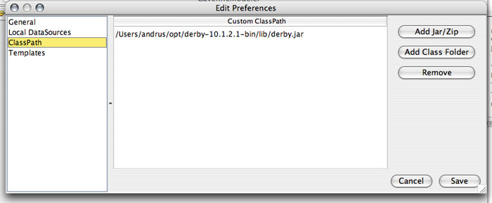
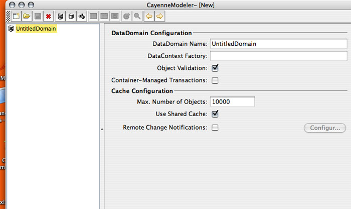
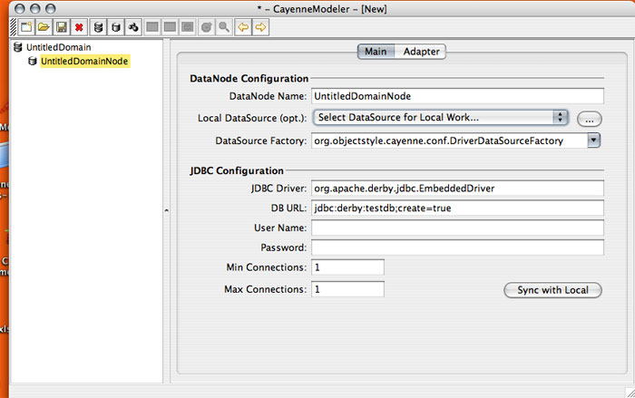

Tutorial Starting Mapping Project
Start CayenneModeler by doubleclicking the appropriate startup file in the bin directory of Cayenne installation (if the Modeler does not start, see this page for more information).
Go to "Tools > Preferences > ClassPath" and add a derby.jar file to the list of "Custom ClassPath" entries to allow CayenneModeler to work with Derby. When done click "Save". If you are using a database other then Derby, you should enter a location of that database JDBC driver instead.

Now you will create both database schema definition and object mapping from scratch using CayenneModeler. Note that in cases when you already have a legacy database, this process can be automated by using reverse engineering features of the Modeler ("Tools > Reengineer Database Schema"). Still understanding how manual mapping works is important.
Click on the "New Project" button on the toolbar (leftmost button). A new project will appear that contains a single DataDomain. The meaning of a DataDomain is explained elsewhere in the User Guide. For now it is sufficient to understand that DataDomain is the root of your mapping project:

The next project object you will create is a DataNode that is a descriptor of the physical database. With "UntitledDomain" selected on the left, click on "Create DataNode" button on the toolbar (or select "Project > Create DataNode" from the menu.
A new DataNode is displayed. You can leave the defaults in the "DataNode Configuration" section unchanged, but you need to specify JDBC Configuration parameters. For embedded Derby database you can enter the following settings, replacing "testdb" with an absolute path of the directory on your filesystem where you want the database to be created (e.g., on Windows you may specify jdbc:derby:c:/testdb;create=true):

Now you will create a DataMap - an object that holds all the mapping information. To do this, click on "Create DataMap" button (or select a corresponding menu item). Note that the newly created DataMap is automatically linked to the DataNode that you created in the previous step. If there is more than one DataNode, you may need to link a DataMap to the correct node manually. In other words a DataMap within DataDomain must point to a database described by the map.
You can leave all the DataMap defaults unchanged except for one - Java Package. Enter "cayenne.tutorial" for the default package name that later will be used for all persistent classes:

Before you proceed with the actual mapping, let's save the project. Click on "Save" button in the toolbar and navigate to the "cayenne-tutorial" Eclipse project folder that was created earlier. Cayenne mapping files must be accessible in the application CLASSPATH, so let's save them under "cayenne-tutorial/src" folder. Now if you go back to Eclipse, right click on "cayenne-tutorial" project and select "Refresh", you will see three Cayenne XML files:

Next Step: Tutorial Object Relational Mapping